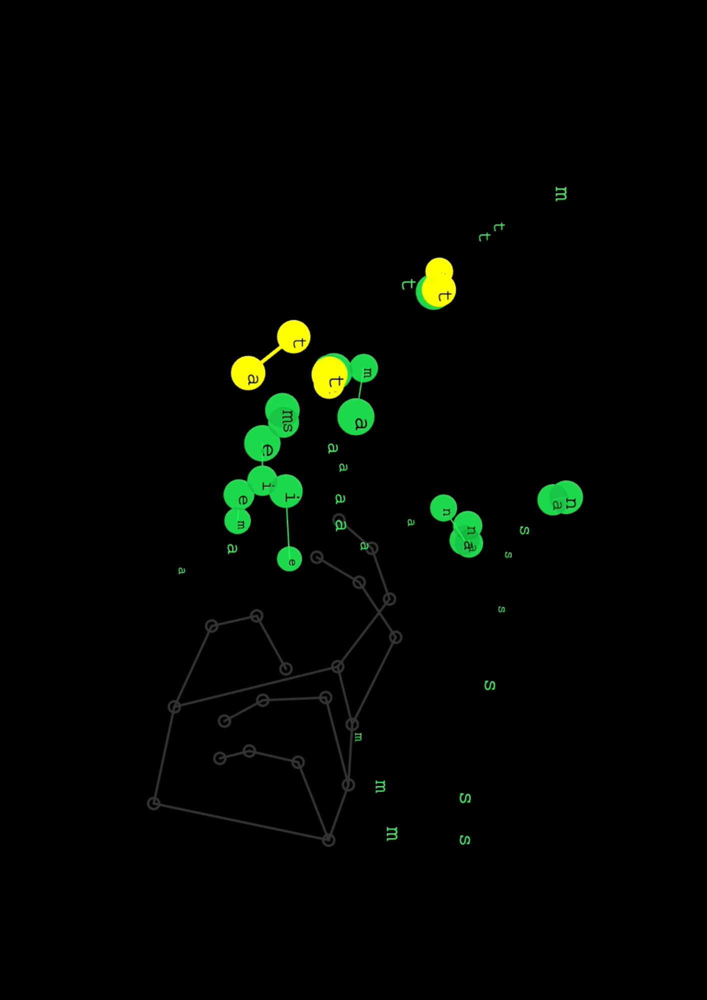
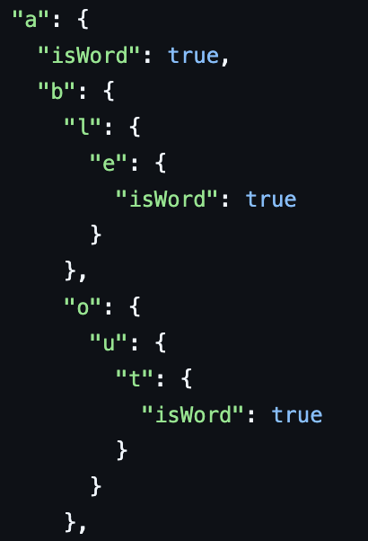
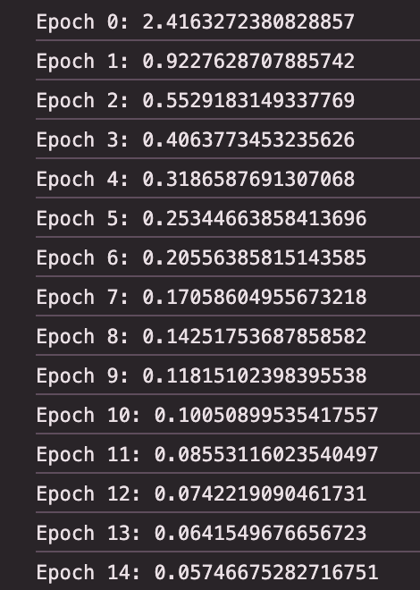

Paint words on screen with real-time body tracking
Bubbly is an interactive program that uses real-time body tracking and American Sign Language(ASL) regconition to allow players to sign letters on the screen. These letters spawn from your hand and attach to one another if they form a word together!
This project was built in p5.js and TensorFlow. The body tracker used here is the open source framework, MediaPipe, developed by Google, and configured by Professor Golan Levin for this project. More specifically, I am using the Hand Landmarker task of MediaPipe, which provides 21 coordinates on the hand, such as wrist, finger bases, and finger tips.
The dataset consists of JSON files organized by letter, where each file contains an array of hand instances. Each instance is an object with two fields: "class", specifying which ASL letter it represents, and "features", an array of 42 values representing the x and y coordinates of 21 hand landmarks detected by MediaPipe. For example, a.json looks like this: [{ "class": "a", "features": [x1, y1, ..., x42, y42]}, {...}, {...}]
This dataset was captured by recording short segments of someone signing each letter, then extracting the screen coordinates of all 21 hand landmarks per frame. Each letter also includes rotated variations of the gesture, so the model learns the overall shape and spatial relationships between landmarks rather than memorizing a single static pose. Each letter has over 600 instances, enough to acheive an entry level recognition.

There is also a JSON file called words_dictionary.json that has a list of English words, which I found from the Github Repo: https://github.com/dwyl/english-words. For purpose of Bubbly, I had to disect each word into its letter composition, which I represent as a trie in the file words_trie.json, as shown on the side. This format allows the program to find both prefixes of a word and complete words, and changes the bubble colors based on this status. For example, the image on the left represents the words "a", "able", and "about", with the flag "isWord" set as true, and unmentioned otherwise.
The custom ASL recognition model is a 3-layer feedforward neural network, also known as a Multilayer Perceptron (MLP). It uses fully connected layers, meaning every neuron connects to every neuron in the next layer, allowing the model to consider all input features when learning. Data flows in one direction only — from input to output — which is what makes it feedforward. To learn complex patterns beyond simple straight lines, the model uses ReLU (Rectified Linear Unit), an activation function defined as f(x) = max(0, x), which introduces the nonlinearity needed to detect curves and decision boundaries. Together, these design choices let the model process 42 hand landmark coordinates and produce a probabilistic prediction of which of the 26 ASL letters is being signed.

Training the model on over 16,000 instances, I ran 15 epochs, each epoch being one full pass through the entire dataset. Epoch loss measures how wrong the model's predictions are on average: a lower loss means the model's output probabilities are closer to the correct letter. As shown on the side, the loss dropped steeply in the first few epochs as the model learned the broad distinctions between letters, then leveled off as it fine-tuned subtler differences. After 15 epochs, the model reached a validation accuracy of 95%, correctly identifying the signed letter most of the time. Letters with similar handshapes, like A, E, and S, posed the greatest challenge, which is why I included rotated variations in the training data to expose the model to a wider range of poses per gesture.
Forming words Using spatial hashing, each letter on the screen has its set of neighbors. At every frame, each letter is checking its neighbors and determining if combining with another can form a word, or a prefixe of a word. The same mechanics apply to already-connected letters too. Connected letters then live in their own bubbles, but have arms grabbing onto each other to not drift apart.
Perlin Noise is used here to add slightly dynamic to how the objects move and interact with others on the screen. Letters follow a patterned field instead of static or unchanging force.
Density-based force helps with readibility and organization of how letters move on screen. If the hand remains in one position for a long time, letters would stagger on top of each other without density-based force. This custom force ensures that if a region on screen houses too many letters, they each push apart from each other to create space.
Letter/Word-specific force was added with intention to simulate unique traits or personality among combinations of letters. This force is currently being explored and implemented, and is not entirely finished. Right now, this features might appear random and buggy, but it's being worked on!
One of the main challenges of this project was optimization. As letters began to crowd on screen, I explored algorithms for efficiency like Delaunay triangulation and GPU programming. Some topics were easy to grasp, and others weren't. I nearly gave up when I went down the GPU programming path, specifically texture maps, where information like force or position is stored on a grid that GPUs excel at processing in parallel. It turned into a rabbit hole. I wasn't familiar with the syntax, and the mental model didn't map onto anything I'd worked with before. I couldn't make progress. It was my mentor who stepped in and pointed out that GPU programming might not even be the right tool for what I was building. That reframe was exactly what I needed. It led me to spatial hashing, a much simpler approach where the screen is divided into a grid of cells, and each letter only checks neighbors within its own cell rather than comparing against every other letter on screen. The performance difference was immediate, and the code was something I could actually reason about.
A part of this project was inspired by what I learned in my Applied Machine Learning class, which is a no-code, algorithm and usage-based class that explains the logic behind machine learning methods. With an emphasis on real-life applications of these methods, this class fostered my interest in knowing how to implement algorithms, which is exactly what I did in this project. I researched documentation on TensorFlow, read existing functions, and examined projects made with it, and eventually began to train my own model with it. I realized that it was a steep learning curve in the beginning, as contents in class turn into lines of code that I can't understand right away. But over time, things started to click. I understood what a densed layer was, what each neuron is doing, and what the loss curve drop implied about my model. Each tuning decision made the my model better recognize hand gestures in real time, which felt very far from where I started.
From class critiques, I recognized that there are numerous directions this project can grow into something more. The word-forming mechanic could become the foundation of an educational tool for learning ASL, or the gesture recognition could be extended to full words and phrases rather than individual letters. The visual language of bubbles and connections also feels like it has more to say as a game, a poem generator, or something I haven't imagined yet. What's here feels like a beginning, and that's what I find most exciting about it.